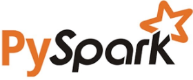
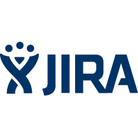

Mohan Krishna Chadram
Certified Product Owner & IT Business Analyst with 10+ years of experience essaying various technical and functional roles in Banking & Financial Services and Health Care sectors. I am expertise working with cross-functional teams in the software development, Business workflows, analyzing business operations and providing business solutions by leading and managing Technology teams.
Responsible for managing the complete Project life cycle that includes Scope identification, defining Project Roadmap, Requirement gathering, Analysis, Design, Development, testing, implementation, enhancements, Gap analysis and Risk Management of Software Applications and Services using Waterfall and Agile methodology.
I am also a certified Scrum Master who can lead, schedule, plan and facilitate continuous Business process improvement events. Experienced in leading the Teams Management responsibilities that includes Project coordination, planning, execution and release management.
Experience
Business Analyst
The objective of the Enterprise Big Data Projects is to solution, design, develop and implement the large-scale enterprise solutions on cloud. Implement Claims migrations, Healthcare benefits, Contract renewals, Enrollments and Rating Engine projects into Hadoop Framework using agile methodologies. Deliver Data ingestions, Analytical & Audit Reporting needs and enhancements adapting to quality standards and overseeing smooth implementation of the projects involving multi-vendor accounts. Focused on client first approach and delivering the services based on business needs without compromising on quality standards, managing financials and overseeing smooth implementation of the projects involving multi-vendor accounts.
Business Analyst
The goal of CCB - Document Management Project is to provide maintenance/enhancements, integrations of modules and testing. Image Archive and Retrieval project provides services to search and retrieve documents from various archives of the firm, System Testing, Integration Testing, Regression Testing and User Acceptance Testing for the Servicing and Default applications. Image Archive and Retrieval project has a web portal to search and retrieve any document from various archives like IBM OnDemand, FileNet P8 and ETA archives. The web portal also allows the users to modify a document and upload to the archive, print the documents, fax and mail the documents. The project goal is to make enhancements to the web portal to make users access the documents easily.
Information Risk Analyst
I am member of the Chase CCB (Consumer & Community Banking) Access Uplift - Identity & Access Management Team. Responsible to perform end-to-end information systems compliance testing that included assessing risk and formal reporting of risk internal and external to the enterprise. Compliance activities include Sarbanes-Oxley compliance,operational audits, Information Technology audits, internal audits, external audits, business analysis and requirements gathering.
Business Analyst
Worked for the Chase Auto Finance, BCBS (Basel Committee on Banking Supervision) Reporting project, specific responsibilities include producing project scope documents, documenting functional specifications, performing complex data analysis, data mapping, defining test scripts, liaising with the advisor end-users on business related project deliverables. Responsibilities include adherence to the defined SDLC processes, project deliverable management, advanced data analysis, issue and risk identification and tracking, as well as status reporting.
Data Remediation Analyst
Data Integration/Remediation project, for the Risk Analysis Division. My role was to access the information about the data source fields from the point of delivery mappings for the banking systems and assess the impact on downstream data management environments of processing different banking products via different systems and processes. The banking systems included the Advanced Lending Solutions, Mortgage Servicing Systems, Mortgage Origination Systems, Collection & Recovery Systems, Automated Financial Systems and Total System Services.
Software Engineer
FRUX Software Solutions develops software solutions and provides integration services to deliver a standards-based, manageable and cost-effective infrastructure that reliably connects applications and integrated business processes across the extended platforms.
Education
International MBA Institute
Coursework: Levels of Management; Management Skills; Approaches to Management; Management Planning
Oklahoma State University, Stillwater, OK, USA
Graduate Coursework: Digital Computer Design; Information Assurance Management; Digital System Testing; International Teaching Assistant Oral Proficiency; Linear Systems; Wireless Communications.
Gitam Univeristy, Visakhapatnam, AP, India
Undergraduate Coursework: Database Management Systems; Web Technologies; Computer Architecture & Organization; Operating Systems; Wireless Communications & Networks; Electronics Measurements & Instrumentation.
Skills
-

-

- 
-

- 
-

- Software Development Lifecycle (SDLC) Methodologies: Agile (Scrum), Lean, Waterfall.
- Database management/IDEs: Hadoop, AWS, Teradata, Oracle, SQL Server, SAS Enterprise Guide.
- Programming: SQL, Soap Webservices, Python, SAS, Java.
- Project Management/Workflows: ITSM, ITIL, GitHub, HP ALM, JIRA, Confluence, Conceptboard, Figma, MS Visio, SharePoint.
- Cybersecurity: Identity and Access Management (IAM); Privileged Access Management (PAM); Governance, Risk & Compliance (GRC – RSAM, RSA - Archer).
- Business Intelligence Tools: Tableau, Cognos, MSBI, Informatica.
- Certifications: CSPO, Scrum Master, CyberArk Trustee, ITIL, CAMS, CIAM, Six Sigma-Green
Professional Certifications
- Certified Scrum Product Owner - Scrum Alliance, 001320781 in Feb-2022
- Certified Scrum Master - Scrum Alliance, 0013207811 in Mar-2022
- CyberArk Certified Trustee - CyberArk, 1221990 in Sep-2020
- Certified Access Management Specialist - Identity Management Institute, 3944 in Feb-2018
- Certified Identity and Access Manager - Identity Management Institute, 3676 in Jul-2017
- ITIL Foundation Certificate in IT Service Management - EXIN & AXELOS, 5946432 in Mar- 2017
- Six Sigma Yellow Belt - Six Sigma Study, 679493 in Jan-2019
- SAS Certified Base Programmer for SAS 9 in Sep-2015